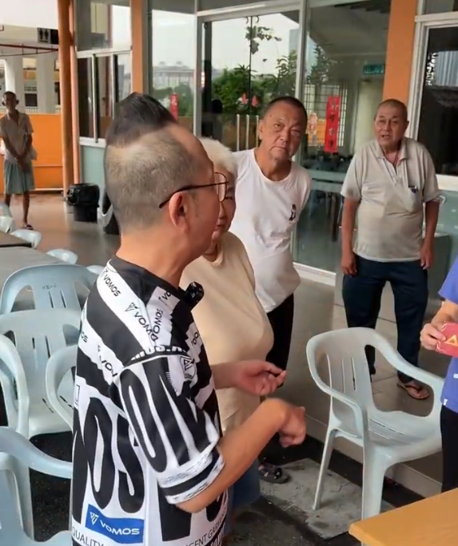

温暖社区的爱心接力：走进关怀中心，用陪伴与欢笑点亮长者的心田
社会中最动人的温度，往往来自于人与人之间的真诚互助。在一个晴朗的周末，热心志愿者手提满满的爱心物资与慰问品，踏进了社区长者关怀中心的大门，为这里的爷爷奶奶们带来了久违的欢声笑语。
每一份带来的小礼物，都寄托着对长者们的深切敬意与关怀。看着志愿者迈着轻快的步伐走进中心，空气中顿时弥漫着温馨与期待的味道。
1. 践行爱心公益的三个温馨行动
关爱老年群体不仅仅是一句口号，更体现在日常生活中点点滴滴的实际行动中：
亲自送上关怀与物资： 准备生活所需物资与营养品，亲手送到老人们的手中，让他们感受到社会的关爱。
耐心倾听与温馨陪伴： 搬上一把椅子坐下来，静静倾听老人们讲述过去的故事，给予他们情感上的寄托。
传递欢声笑语： 陪老人们聊聊天、解解闷，用幽默与真诚为他们的生活增添一份色彩与活力。

2. 真诚相伴：心与心交融的感动时刻
走进温馨的室内活动区，长者们围坐在一旁，脸上挂着和蔼可亲的笑容。志愿者热情地招呼着每位老人家，细心询问着他们的日常健康与生活近况，现场欢声笑语不断，洋溢着如家人般的融洽氛围。
对于老人们来说，最珍贵的礼物莫过于大家的陪伴与牵挂。看到老人们眼中闪烁的感动与欣慰，所有参与探访的人都深刻体会到了“赠人玫瑰，手有余香”的快乐与满足。
“真正的关怀，不只是物质上的给予，更是心与心之间的温暖相拥。一份真诚的陪伴，能照亮长者们的整个世界。”
这份无私的关爱，不仅拉近了邻里与社区之间的距离，更像是一股暖流，缓缓流淌在每个人的心田，滋养着社会的和谐与美丽。
总结
老吾老以及人之老。让我们共同发扬尊老敬老的传统美德，将这份善意与爱心继续延续下去，用温暖与陪伴让每一位长者都能拥有幸福惬意的晚年生活。
本故事旨在传递社区关怀、尊老敬老、公益爱心与积极正能量的精神理念。